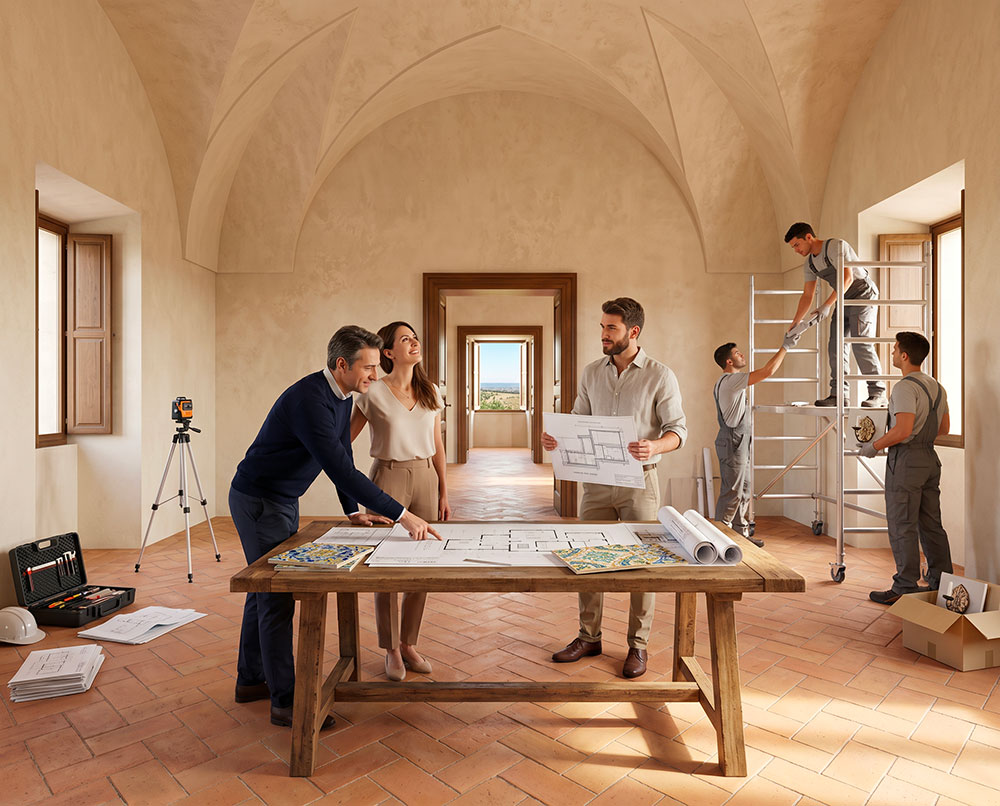

The Project
The concrete path
Baglio San Michele is a 16th-century fortified farmhouse in the province of Ragusa, regenerated as a stable intentional community rooted in Sicilian Slow Living. The project develops in progressive phases.

Restoration of the Historic Farmhouse
The original core of the farmhouse is recovered through a philological restoration that respects the architectural features of the 16th century: stone vaults, tuff walls, and natural local materials.
14 high-quality apartments are created, distributed between the ground floor and first floor, all with access to the common spaces of the Baglio.

45–65 m² • Ideal for couples or singles. Direct access from the courtyard, functional and bright spaces.

80–105 m² • Perfect for families. Possibility of wooden mezzanine and greater flexibility of spaces.

105–115 m² • Prestigious unit with strong historical features and privileged position inside the Baglio.
The Farmhouses on 23 Hectares
On the lands of the farmhouse, 20 new traditional Iblean stone houses will be built, distributed in the landscape with respect for the environment. Each farmhouse will have a private plot of about one hectare, with vegetable garden, garden, and orchard.

140–160 m² • Essential and functional solution with private plot and possibility of vegetable garden.

200–220 m² • Spacious and comfortable, ideal for large families or those who desire more space.

240–260 m² • Larger and panoramic version, with privileged view over the Iblean territory.
Transition mechanism between Phase 1 and Phase 2
The project is designed to accompany families over the long term. Those who purchase an apartment in the historic Baglio (Phase 1) and, as the family grows, wish to move to a larger farmhouse (Phase 2), can return the residential unit to the Baglio. The recognized value of the apartment will be deducted from the price of the new farmhouse.
How life works in the project
Privacy + sharing
Each family unit has a private residence. Common spaces are managed and maintained together, creating a balance between intimacy and community life.
Clear governance
The Chapter of the Savi manages common resources, approves new entries, and ensures compliance with the Internal Regulations with anti-speculative clauses.
Mixed economy
Contributions from members, internal micro-supply chains (vegetable garden, processing, workshops) and permanent training. No “hit-and-run” residences.
Intergenerational support
Children and the elderly are at the center. The project encourages the transmission of rural, artisanal, and value-based knowledge between generations.